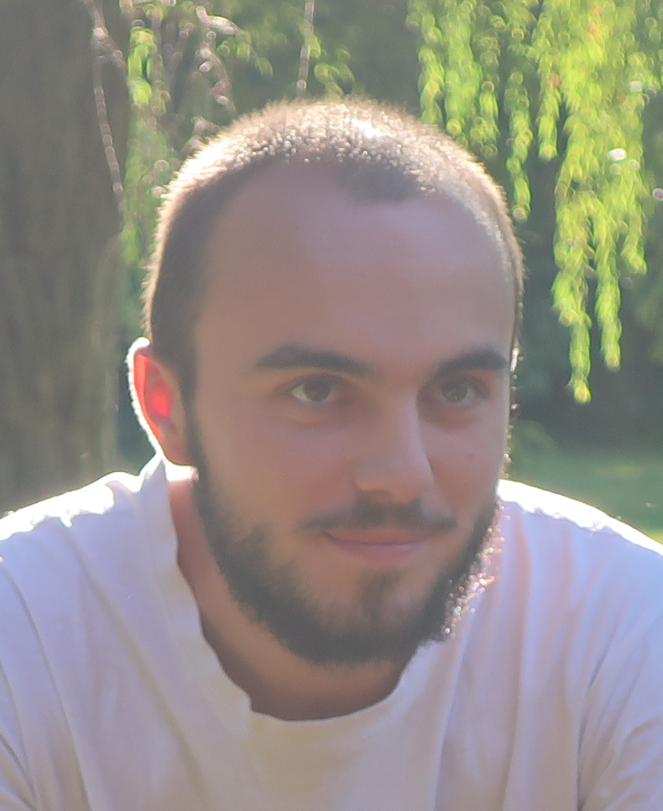

Antoine MARIE
Hello!

I'm a second year PhD student in the group of Pierre-François Loos at the Laboratoire de Chimie et Physique Quantiques in Toulouse. I have a keen interest for theoretical chemistry and, in particular, electronic structure theory. My research focus on the development of Green's function-based methods for quantum chemistry. In particular, I'm really interested in post-GW self energies, so-called vertex corrections. In addition, I also quite like state-specific excited-state wavefunction methods even if I'm not working on this right now.
Before my PhD I obtained a Master degree in "Computational physics and chemistry" at the Ecole Normale Supérieure de Lyon. During this period, I had the opportunity to do two internships, both in the same group as my current one, during which I worked on analytic extension of perturbation theory in the complex plane in quantum chemistry (see Ref. 1) and on state-specific variational coupled-cluster excited-state solutions (see Ref. 3).
Finally, prior to my PhD, to fulfill the requirement of the ENS' diploma, I spent one year abroad as a research intern. During this time, I spent five months at the Physical and Theorical Chemistry Laboratory in Oxford. There, I worked under the supervision of Hugh Burton on the multiple stationary points of the CASSCF energy landscape. Then, I moved to Amsterdam to learn, within Paola Gori-Giorgi's group, the Strictly Correlated Electrons formalism of Density Functional Theory. We used this method to investigate a one-dimensional model of many-body localization.
In addition, I'm really interested by Linux, Emacs, Rust and more generally free and open softwares, although I'm still on the learning curve. I hope that, one day, I will be able to contribute to such projects. You can find some resources that I find useful about some of these subjects on this page of my website.